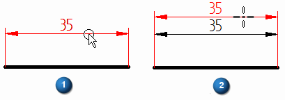
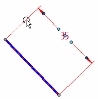
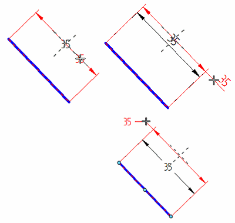
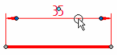
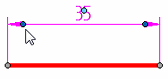
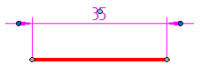
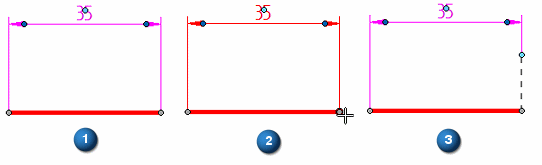
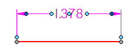
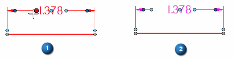

Move a dimension
You can move the dimension line, dimension text, terminators, and projection line by dragging them.
General procedure
-
Click a dimension line or projection line to display all of the dimension handles.
Note:Not all dimensions have the same number of handles. For examples of the dimension handles, see the help topic Dimension edit handles.
-
Position the cursor over the dimension handle you want to manipulate, and then click+drag the handle.
Refer to the following procedures for specific examples.
Move the dimension line
-
Position your cursor on the dimension line so that it highlights (1), and then click+drag it (2).
This also adjusts the length of the projection lines.

Move the dimension text
-
Click the dimension to display its handles.

-
Click+drag the move handle at the center of the dimension text.
You can move it along the dimension line and outside of the projection lines.

Move the terminator outside the projection lines
-
Click the dimension to display its handles.

-
Click the terminator handle.

-
From the menu, select the Flip Terminators command.
Both of the terminators are flipped outside the projection lines.

Change the length of a projection line
You can adjust the projection line length by dragging the projection line edit handles. The handles shown below are available for the ANSI dimension style.
-
Click a dimension to display its handles.
-
Click+drag the projection line handle on the side that you want to modify.
-
To adjust the other side of the dimension, click+drag the projection handle at that end.
The projection line edit handles for an ISO dimension are coincident with the dark gray connection handles (1). When you click+drag the connection handle (2), you expose the light blue projection line handle (3).

Change the length of a dimension line
You can adjust the dimension line length by dragging the dimension line edit handles. The handles shown below are available for the ANSI dimension style.
-
Click a dimension to display its handles.

-
Click a dimension line edit handle (1), and then drag it to shorten (or lengthen) the dimension line on that side (2).

-
Adjust the dimension line on the other side of the dimension value using the edit handle at that end.
How do I
Edit a 2D dimension (sketch, profile, draft)Display a half dimension
Set terminator size and shape
Change dimension behavior
Change the orientation of a dimension
Break a dimension projection line
Remove breaks from a dimension projection line
Change the parent of a dimension by dragging it
Reattach a dimension or annotation using the Attach Dimension command
Add and remove jogs on a dimension
Activate a part for dimensioning in a draft quality view
Learn more
Dimension edit handlesSnap indicators for dimensions
Look up more details
Attach Dimension commandAdd Projection Line Break command
Remove Projection Line Break command
Activate Part command